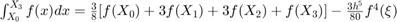
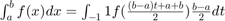

Práctica 04: Convolución y correlación
Intituto Politécnico Nacional
Unidad Profesional Interdisciplinaria en Ingeniería y Tecnologías Avanzadas
Análisis de Señales y Sistemas
Grupo: 2MV1
Alumnos:
- Carmona Bellido Marco Tulio
- Ordorica Muñoz Leonardo Antonio
Contents
Introducción
Existen ocasiones en las que se nos presentan problemas sencillos de resolver en si mismos pero con un conflicto, se necesita resolver una integral bastante dificil sino imposible con métodos conocidos como tecnicas de integración en estas ocasiones será mas sencillo realizar las integrales mediante algunos métodos llamados métodos numéricos.
A continuación se realiza un resumen de algunos de los métodos numéricos existentes para la resolución de integrales dificiles.
Método de fórmulas cerradas de Newton-Cotes:
Cabe resaltar que se les llama fórmulas cerradas debido a que se utilizan los extremos del intervalo de integración, es decir, que la función queda encerrada en dicho intervalo.
Con este metodo se puede encontrar un polinomio que sea muy parecido a la función original, dicho polinomio va a coincidir con la función en ciertos número de puntos más un término de error. El objetivo de esto es integrar el polinomio más el término de error en lugar de la función original. Se tendrán distintas fórmulas de Newton-Cotes que dependerán del grado del polinomio que se quiera encontrar, desde el punto inferior a hasta el punto superior b. Estos polinomios nos van a dar distintas técnicas de integración. Cada uno de estos puntos intermedios estan separados la misma distancia, esta distancia se llama paso.
El primero de los puntos será y el último punto será .
El paso se define como:
Y cada punto será:
, asi cada punto tendrá la misma distancia al anterior.
A la primera de las fórmulas se le conoce como Regla del trapecio o fórmula cerrada de Newton Cotes de 2 puntos, la cual es utilizada para obtener un polinomio de grado 1 (n=1): Se le llama regla del trapecio porque lo que se hace es calcular el área del trapecio formado por el polinomio de grado 1.
, , ,
Y su fórmula es:
,
Observamos que esta fórmula contiene un término de error que depende de la segunda derivada de f(x). Existe algo llamado grado de precisión, el cuál es el grado del polinomio necesario para el cuál la integral tiene error igual a cero respecto de la función original.
Por ejemplo, se requiere realizar la siguiente integral, la cual es dificil de realizar por tecnicas de integración conocidas, por lo que se utilizará la regla del trapecio para aproximar su resultado.
Aplicamos las fórmulas descritas anteriormente:
,
Se realizan las evaluaciones y simplificaciones correspondientes y obtenemos:
,
Como podemos observar nos queda un termino dependiente de , este termino nos indica que existe un valor de que al sumar o restar el termino nos arroje el valor exacto de la evaluacion de la integral. Cabe destacar que no podemos saber cual es dicho valor, solo podemos saber entre que valor y que valor se va a encontrar.
A continuación vamos a observar una segunda regla, llamada Regla de Simpson o fórmula cerrada de Newton-Cotes de 3 puntos, la cual es utilizada para obtener un polinomio de grado 2 (n=2):
En este método lo que se hace es encontrar el área de la parábola definida por los puntos  , y . Aqui también existe un término de error que depende de la cuarta derivada de f(x).
, y . Aqui también existe un término de error que depende de la cuarta derivada de f(x).
% , , ,
La fórmula de la Regla de Simpson es:
,
A continuación volveremos a realizar la misma integral pero con la Regla de Simpson:
Aplicamos las fórmulas descritas anteriormente:
,
Se realizan las evaluaciones y simplificaciones correspondientes y obtenemos:
,
Como podemos observar nos queda un termino dependiente de , este termino nos indica que existe un valor de que al sumar o restar el termino nos arroje el valor exacto de la evaluacion de la integral. Cabe destacar que no podemos saber cual es dicho valor, solo podemos saber entre que valor y que valor se va a encontrar.
A continuación vamos a observar una tercera regla, llamada Regla de 3/8 de Simpson o fórmula cerrada de Newton-Cotes de 4 puntos, la cual es utilizada para obtener un polinomio de grado 3 (n=3):
Aqui también existe un término de error que depende de la cuarta derivada de f(x).
% , , , 
La fórmula de la Regla de 3/8 de Simpson es:
,
A continuación volveremos a realizar la misma integral pero con la Regla de 3/8 de Simpson:
Aplicamos las fórmulas descritas anteriormente:
,
Se realizan las evaluaciones y simplificaciones correspondientes y obtenemos:
,
Como podemos observar nos queda un termino dependiente de , este termino nos indica que existe un valor de que al sumar o restar el termino nos arroje el valor exacto de la evaluacion de la integral. Cabe destacar que no podemos saber cual es dicho valor, solo podemos saber entre que valor y que valor se va a encontrar.
Asi mismo podemos observar que esta aproximación es mejor que las anteriores ya qu esta mas cerca del valor de la integral que es de aproximadamente 1.49. Por lo que podemos concluir que entre mas alto es el grado del polinomio utilizado la aproximación es mejor.
Existen tambien las llamadas Fórmulas compuestas de Newton-Cotes.
En estas fórmulas lo que se hace es subdividir las aproximaciones anteriores para mejorar la precisión.
Tenemos primero la Regla compuesta del Trapecio:
Ya no usamos un solo trapecio para la aproximación sino el número de trapecios necesarios para una buena aproximación. Aqui los puntos extremos solo se evaluan una vez y los puntos intermedios dos veces. Ahora n pasa a ser el número de subintervalos, ya no es el grado del polinomio. El término de error sigue dependiendo de la segunda derivada de f(x).
n es el número de subintervalos.
, paso
La fórmula de la Regla compuesta del trapecio es:
,
A continuación volveremos a realizar la misma integral pero con la Regla compuesta del trapecio:
Aplicamos las fórmulas descritas anteriormente:
,
Se realizan las evaluaciones y simplificaciones correspondientes y obtenemos:
;
Como podemos observar la aproximación con este método es mejor que con los anteriores.
Asi como existe la Regla compuesta del trapecio, también tenemos la Regla compuesta de Simpson. Aqui cada 2 subintervalos se usan para crear una parábola. Asi entre más parábolas existan la aproximación va a ser mejor. Los puntos extremos forman parte de ambas parábolas, es decir, la anterior y la siguiente a ellos, a excepción de los extremos del intervalo que solo forman parte de una parábola cada uno, la primera y la ultima. Aqui n tambien es el número de subintervalos y n debe ser par. El término de error sigue dependiendo de la cuarta derivada de f(x).
n es par y es el número de subintervalos.
, paso
La fórmula de la Regla compuesta de Simpson es la siguiente:
,
A continuación volveremos a realizar la misma integral pero con la Regla compuesta del trapecio:
Aplicamos las fórmulas descritas anteriormente:
,
Se realizan las evaluaciones y simplificaciones correspondientes y obtenemos:
;
Como podemos observar la aproximación con este método es aun mejor que con los anteriores.
El ultimo metodo que revisaremos esta vez es el de Cuadratura Gaussiana.
Este metodo trata de aproximar la integral con evaluaciones de la función en determinados puntos multiplicados por determinadas constantes. En las fórmulas de Newton-Cotes se usan los polinomios de Lagrange para obtener un cierto grado de precisión. Ahora se utilizarán polinomios de Legendre para aproximar integrales de funciones de tal forma que los puntos de evaluación satisfagan un cierto grado de precisión para que no haya error.
Se utilizan en el intervalo -1,1 ya que tienen propiedades interesantes en ese intervalo. Sus raices son reales. Debido a que no siempre se requiere integrar de -1 a 1 se usa un cambio de variable para adecuarlo del cual hablaremos en un momento.
La fórmula de la Cuadratura Gaussiana es:
, 2n parámetros
Donde es el coeficiente del polinomio de Legendre por el que se va a multiplicar la evaluación de la función en las raices del polinomio de Legendre .
Si se requiere integrar en otro intervalo que no sea de -1 a 1 se utiliza la siguiente adecuación de la integral original, asi, se podran utilizar los polinomios de Legendre sin problemas.

A continuación daremos solución al mismo problema para concluir que método es el mejor, primero se utilizará el polinomio de grado 2 y posteriormente el polinomio de grado 3.
Utilizando el polinomio de Legendre de grado 2:
Utilizando el polinomio de Legendre de grado 3:
Como podemos observar las aproximaciones con polinomios de Legendre son mejores que las de Newton-Cotes por lo que es recomendable utilizarlas.
Problma 1
Se desea comprobar la convolucion obtenida el el PR04, las funciones a las que se les realizo la convoluvion son las siguientes:
- .
- .
En matlab definimos las funciones de la siguiente manera y sus graficas como se muestran a continuacion.
f = @(t) exp(-t).*(t>=0 & t<=1); g = @(t) t.*(t>= -1 & t <=1);
El resultado de la concolucion obtenido analiticamente fue el siguiente:
En matlab la escribimos como:
y =@(t)(t+2*exp(-t-1)-1).*(t>=-1&t<0)+(t-1-exp(-1).*(t-2)).*(t>=0&t<1)+(-exp(-1).*(t-2)).*(t>=1&t<=2)
y =
function_handle with value:
@(t)(t+2*exp(-t-1)-1).*(t>=-1&t<0)+(t-1-exp(-1).*(t-2)).*(t>=0&t<1)+(-exp(-1).*(t-2)).*(t>=1&t<=2)
Ahora haciendo uso de una modificacion de la funcion de convconm() comparamos los resultados
convconm(f,g,y,-1.5,3,2.5,1)
hFig =
Figure (6) with properties:
Number: 6
Name: ''
Color: [0.9400 0.9400 0.9400]
Position: [403 246 560 420]
Units: 'pixels'
Use GET to show all properties
Como se puede observar ambos resultados coinciden.
Problema 2
Para el PR05 inciso e) se pide realizar la autocorrelacion de la siguiente señal:
El resultado de dicha correlacion obtenido analiticamente fue el siguiente:
Ahoar procederemos con la parte del codigo para demostrar esta correlacion.
x = @(t) (t>=0 & t<3)-(t>=3 & t<=4); %Funcion a la que se le realizara autocorrelacion r = @(t)(-t-4).*(t>=-4&t<-3)+(t+2).*(t>=-3&t<-1)+(3*t+4).*(t>=-1&t<0)+... (-3*t+4).*(t>=0&t<1)+(-t+2).*(t>=1&t<3)+(t-4).*(t>=3&t<=4)%%Resultado de la autocorrelacion convconm(x,x,r,-4.5,4.5,4.5,-1)
r =
function_handle with value:
@(t)(-t-4).*(t>=-4&t<-3)+(t+2).*(t>=-3&t<-1)+(3*t+4).*(t>=-1&t<0)+(-3*t+4).*(t>=0&t<1)+(-t+2).*(t>=1&t<3)+(t-4).*(t>=3&t<=4)
hFig =
Figure (7) with properties:
Number: 7
Name: ''
Color: [0.9400 0.9400 0.9400]
Position: [403 246 560 420]
Units: 'pixels'
Use GET to show all properties
De igual manera se observa que la grafica del analitico se sobrepone con la grafica que realiza la funcion convconm().
Problema 3
A contiuacion se realizara la convolucion entre las siguientes señales.

La primera señal es para , mientras que la segunda funcion es para
Para llevar acabo esta concolucion se hara uso de la función convdisc, a continuacion se muestra el codifo empleado para la realizacion de este problema.
nf = -3:3; f =@(n) n.*(n>=-3 & n<=3); %x1[n] ng = -2:2; g =@(n) abs(n).*(n>=-2 & n<=2);%x2[n] convdisc( [ng;g(ng)],[nf;f(nf)])
A continuación se muestra una animacion de la convolución.
Problema 4
En este problema se debe realizar la correlacion de las siguientes señales.
La correlacion de la señal y la podemos definir como la siguiente convolucion: .
Como se puede observar en la imagen la función es una función para por lo tanto ![$x_2[n]=x_2[-n]$](P4_eq02434848263119800286.png) , gracias a que la correlacion se puede definir como una convolucion y a que nuestra funcion es par el resultado que obtendremos es el mismo que si hacemos la convolucion de con .
, gracias a que la correlacion se puede definir como una convolucion y a que nuestra funcion es par el resultado que obtendremos es el mismo que si hacemos la convolucion de con .
nf = -3:3; f =@(n) n.*(n>=-3 & n<=3); %x1[n] ng = -2:2; g =@(n) abs(-n).*(n>=-2 & n<=2);%x2[-n] convdisc( [nf;f(nf)],[ng;g(ng)])
A continuación se muestra una animacion de la convolución.
Problema 5
Ahora realizaremos la convolución de las dos señales descritas para los problemas 3 y 4, pero en esta ocacion se realizara mediante el comando conv() de matlab. Para esto definimos las funciones mediante sus alturas, es decir, crearemos dos vectores con las diferentes de alturas de cada funcion.
x1 = [-3 -2 -1 0 1 2 3]; nx1 = -3:3; x2 = [2 1 0 1 2]; nx2 = -2:2; s1 = size(x1); s2 = size(x2); sc = s1(2)+s2(2)-2; n = min(nx1):(min(nx1)+sc); c = conv(x1,x2); figure stem(n,c,'m','linewidth',2)
Como se observa en esta ultima grafica coincide con la grafica en rojo del problema 3.
Referencias
- Martínez, R. [Mate y así]. (2018 Agosto). Métodos Numéricos: Integración [Lista de reproducción]. Recuperada de https://www.youtube.com/playlist?list=PLSC7gO5dTNPewJkJ5Zh3Y7xHfy_fnDKqD
- Lathi, B. P.. (2005). Linear Systems and Signals. New York: Oxford University Press, Inc.